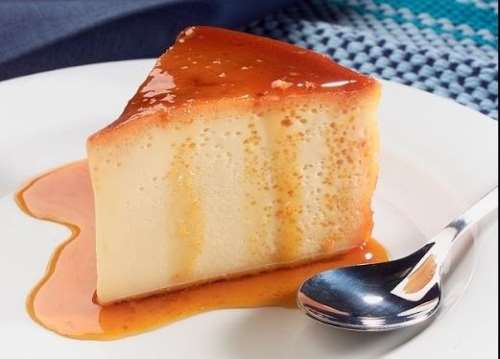
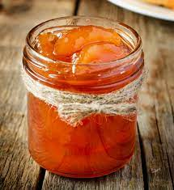

Quesillo
Ingredientes
- 1 cup white sugar
- 1 (14 ounce) can sweetened condensed milk
- 1 ¾ cups milk, or as needed
- 3 eggs
- 1 teaspoon vanilla extract

Dulce de Lechoza or Papaya
Ingredientes
- 2 kilos papaya, or very green milky
- 2 kilos piloncillo, or paper
- 1/2 kilos sugar
- 1 teaspoon baking soda
- 3 leaves fig
- cloves
- water